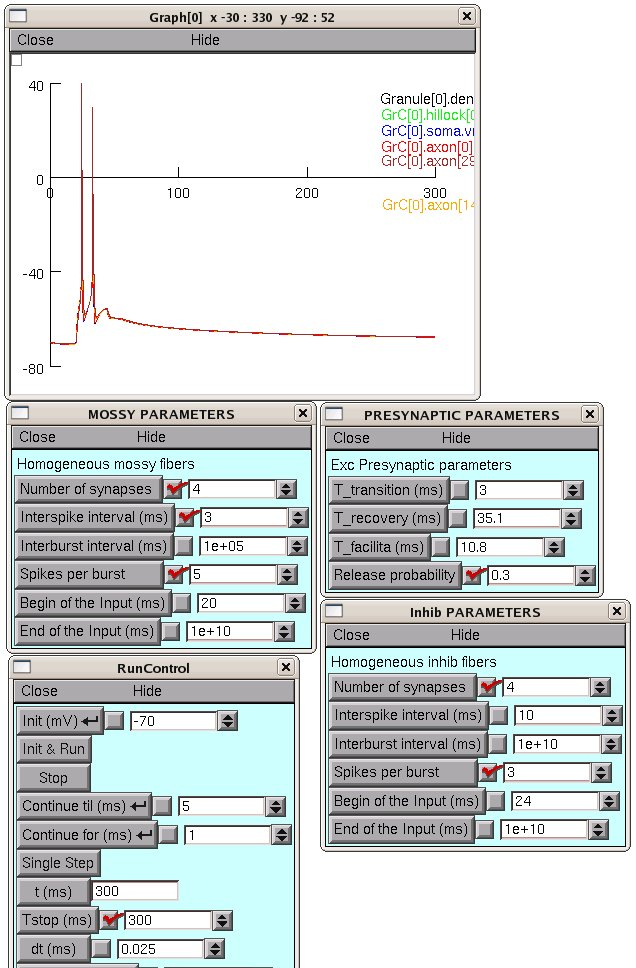

This is the README for cerebellar granule cell model code for the paper Shyam Diwakar, Jacopo Magistretti, Mitchell Goldfarb, Giovanni Naldi, and Egidio D'Angelo. Axonal Na+ channels ensure fast spike activation and back-propagation in cerebellar granule cells. J Neurophysiol (December 10, 2008). doi:10.1152/jn.90382.2008 Implementation was done by Shyam Diwakar in Neuron. In most neurons, Na(+) channels in the axon are complemented by others localized in the soma and dendrites to ensure spike back-propagation. However, cerebellar granule cells are neurons with simplified architecture, in which the dendrites are short and unbranched and a single thin ascending axon travels toward the molecular layer before bifurcating into parallel fibers. Following previous indications (Magistretti et al., 2006; Goldfarb et al., 2007), Here we show that, in cerebellar granule cells, Na+ channels are enriched in the axon, especially in the hillock, but almost absent from soma and dendrites. The impact of this channel distribution on neuronal electroresponsiveness was investigated by multi-compartmental modeling. Numerical simulations indicated that granule cells have a compact electrotonic structure allowing EPSPs to diffuse with little attenuation from dendrites to axon. The spike arose almost simultaneously along the whole axonal ascending branch and invaded the hillock, whose activation promoted spike back-propagation with marginal delay (<200 micros) and attenuation (<20 mV) into the somato-dendritic compartment. These properties allow granule cells to perform sub-millisecond coincidence detection of pre- and postsynaptic activity and to rapidly activate Purkinje cells contacted by the axonal ascending branch. Usage instructions: Auto-launch from ModelDB or download and extract the archive. Then under: ---- MSWIN run mknrndll, cd to the archive and make the nrnmech.dll. Then double click on the mosinit.hoc file. ---- MAC OS X Drag and drop the GrC folder onto the mknrndll icon. Drag and drop the mosinit.hoc file onto the nrngui icon. ---- Linux/Unix Change directory to the GrC folder. run nrnivmodl. Then type nrngui mosinit.hoc ---- After launching the model, one may insert an current clamp electrode to see the model response as in Fig.5A in the paper. Choosing the excitatory mossy fibers and inhibitory fibers from control panel, it is also possible to generate synaptic patterns as reported in Fig.10 in the paper. See the screenshot images in the fig10 folder for details of how to set parameters for the different subplots in figure 10. For example setting the parameters as in fig10/mf0p3_300.png leads to reproducing fig 10 second from top plot:  One may also modify each synaptic terminal individually through "Companel.hoc" file. Attention: The GrC model was adapted to have 4 excitatory and 4 inhibitory synapses as observed in many cerebellar granule cells of rats. To reconfigure please follow changes in the correspoding hoc files. The model files were tested on Fedora 10 Linux and on MS-Win platforms both running Neuron version 7.0. Variable time step(pref DASPK method) works without issues while on Current clamp protocol. While during synaptic activation, it is recommended to turn it off.